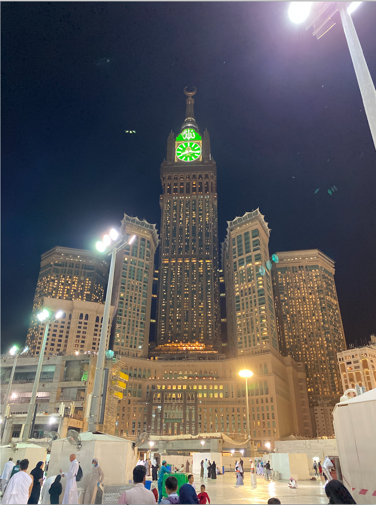
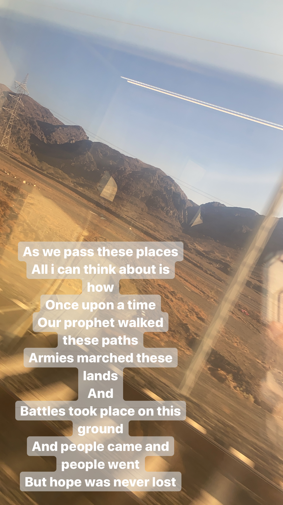
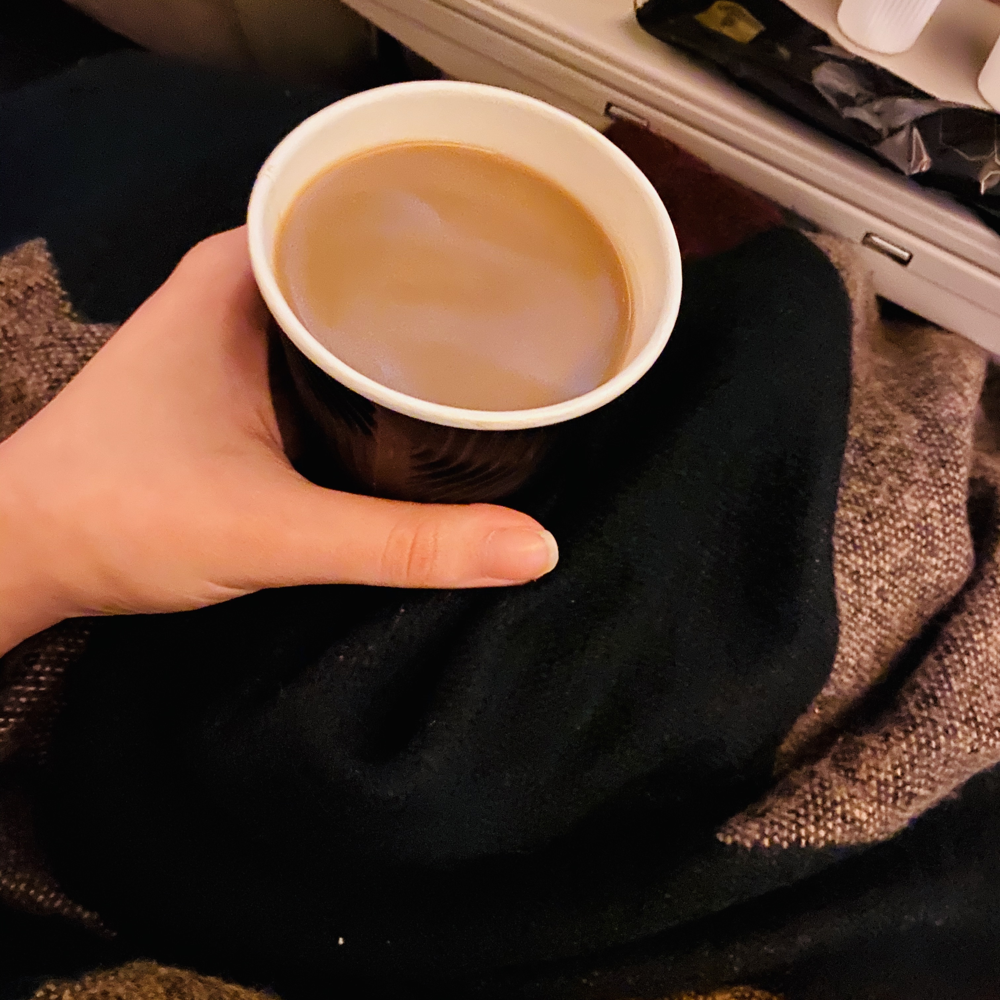

Saudi Arabia
Ive been to KSA several times. The first time was when I was a kid so I dont remember much. the last time was in december 2019, my last trip before the pandemic. It was most definelty the best 2 weeks of my life. I properly experienced every moment of that trip, the hotel stay, the mecca medina life, the studying in my hotel room for the upcoming final exams.Here are some of the snapshots from that trip:
|  | Luxurious Hotel StayThe hotels in Makkah and Medina have always been a big part of planning the most convenient and suitable trip. Maybe cause all a person really does there is visit the grand masjids and if your hotel is far away, it can really distrupt your routine. For the majority of our trips to KSA, we have been blessed with the opportunities of living in hotels connected to the Mecca Clock Tower, a grand and beautiful sight in Makkah. It just adds to the entire scenery making it look as mesmerizing as ever! |
Evening ViewsImagine being able to lay down on a carpetted floor, watching the moon go down and sky changing into a thousand different colors in the most peaceful, serene and safe city in the world, with the soft winds and hums of the people around you. In a city where there is no rush. People live on the same rhythm. such is the life in Medina. no matter how long you stay there, its never enough. Got to enjoy and live this peaceful life there for 4-5 days. Its amazing how quickly I got into a routine there and how hard it was that behind. |
 |
 |
Last NightsMasjid an Nabawi is so big that even though I stayed there for so many days and my hotel was right in front of the masjid and we spent entire days there, I never saw the green dome until my last night there. It was a full round circle to reach there but the view was definetly worth it. We planned to have dinner there late on our last night in medina but because of the freezing december weather, we had to cancel our plans. but it still became one of the most memorable nights of our trip, one that I wish i could go back to even now :( |
Train RidesEver been to historical sights? Ever seen places that have been preserved to show us the lives of our ancestors, their lives so different from ours, so much harder and more difficult than we could ever comprehend. In the train ride from Medina to Mecca, we came across huge desert lands, and i couldnt help but wonder about the people who lived there, the wars that took place on those grounds, the people who lost their familes to those grounds, and how regardless of this, they never gave up, they never lost hope, they kept fighting and living, so arent they to be thanked for everything that we have today? . |
 |
Pakistan
Growing up Ive been to Pakistan so many times that I can't even count. Most of these trips i dont remember because I was a kid but the ones I do remember have all been pretty much the same with all of them following the same pattern:- => shopping for the trip => excitement for the trip => meeting relatives after so long => family gatherings
- <= more family gatherings <= getting sick <= getting even more sick <= wanting to come back home
- => counting days to come home => coming home => swearing to never go back again => And repeat
|

' |
From all those times, ive only travelled alone to pakistan twice and i think its safe to say, those were the two best trips of my life. Everthing from the time spent at the dubai international airport to the days spent with my sister and her friends, the shopping spree and the ride back home, I loved all of it I spent about 5 days each trip and even though i did pretty much the same things both times, which were lots of shopping with my sisters specially books/ watching movies/ visiting my aunt and uncle/ salon visits, i would happily go back again cause of how peaceful and relaxing these trips were. |
Oman
Id like to call Salalah the heaven on earth. Its such a mesmerizing place specially in the Autumn season called as The Khareef. The rainy days start such incredible waterfalls in mountain areas that leave you speechless! There is no need for captions or long paragraphs to describe the places, the pictures speak for themselves!Malaysia
Ive been to malaysia only once back in 2007. I dont remember all the details of the trip since I was just 7 years old. but i do remember a few highlights. I remember a hotel high up on a mountain. I remember a beautiful water park where we spent 2 whole days. I remember an old lady's antique house. I remember living in a villa in a small town and attending their carnival. I remember two tall twin-towers. I remember a huge boat that made everyone nauseous. I remember a long bridge above a park that was very scary to walk on. I remember a temple that was never-ending. I remember craving junk food. I remember rainy days outside a mall entrance waiting for our ride. And I remember those 15 days being the best days of my childhood, better than any other childhood trip ever and certainly a memorable one.